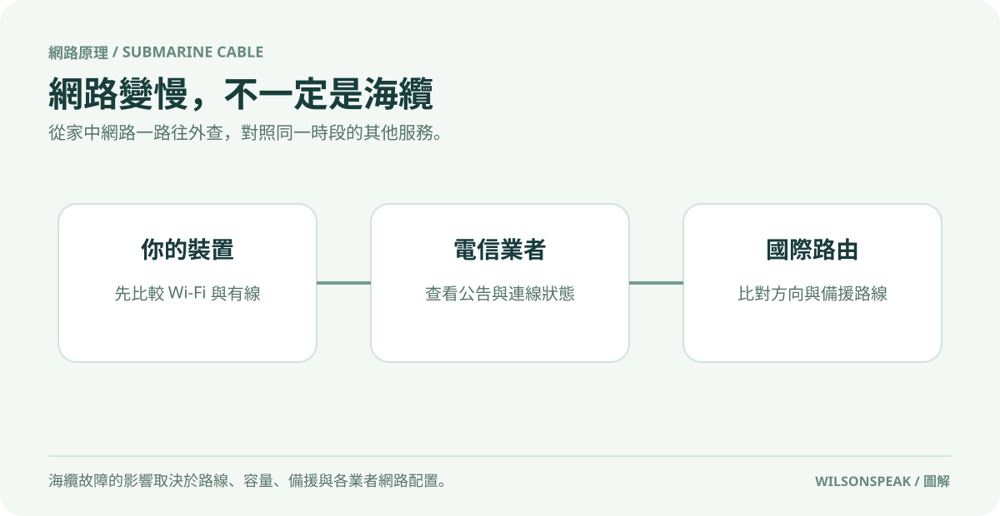

海底電纜故障，台灣上網一定會變慢嗎？

影片封面：Wilson說給你聽；點圖前往 YouTube。
海纜中斷真相：並非全台斷網，而是「方向性」影響
社群曾流傳「海底電纜被弄斷，導致台灣上網變慢」的說法（影片資料整理截至 2026 年 7 月 19 日），許多讀者感到焦慮。事實上，這句話部分屬實，但不能直接推論為全台網路都會癱瘓或顯著降速。海底電纜系統龐大且具備多重備援機制，單一海纜受損的影響取決於受影響路線、容量與備援，不能一概而論。理解背後的運作邏輯，才能避免被片面資訊誤導。

拆解台灣海纜架構與替代路由
台灣地理位置特殊，是亞洲國際網路樞紐之一，周遭環繞多條重要海底電纜。這些電纜主要連接日本、菲律賓、越南及美國等方向。當某條海纜發生障礙時，營運商可能啟動「替代路由」機制，將流量導引至其他正常運作的海纜路徑。
關鍵在於：官方列出的海纜障礙與實際影響範圍需仔細比對。若受損的是連接東南亞的電纜，那麼前往該區域的海外服務可能會延遲增加；但若主要流量是通往歐美或國內伺服器，不一定直接受到同樣影響。因此，不能僅憑一張社群截圖就判定原因，必須確認是哪條海纜、哪個方向受損，以及當時是否有足夠的替代路由承載流量。
如何交叉查證網路變慢的真因
面對網路延遲或斷線，建議讀者採取「由內而外」的排查步驟，區分問題來源：
1. 檢查本機與區域網路：首先確認是否為家中 Wi-Fi 訊號不穩或路由器負載過高。嘗試切換至有線連線或使用行動數據上網，若速度恢復正常，可優先檢查家中區域網路，但仍不能單憑一次測試確診。 2. 檢視 ISP 公告與第三方資料：查詢所屬電信業者是否有發布維護或故障公告。同時參考第三方網路品質監測平台，觀察整體趨勢是否異常。 3. 比對海纜動態與國際路由：若確認非本地問題，再進一步查證國際海纜狀況。注意區分理論值與實測值，官方數據可能顯示路徑切換成功，但用戶端感受到的延遲（Ping 值）仍會因繞路而增加。
分辨傳言與實際歸因
許多時候，網路變慢是多重因素疊加的結果，例如當地 ISP 擁塞、海外伺服器故障或本機應用程式問題。若僅將矛頭指向海纜中斷，容易忽略其他潛在原因。
在評估責任歸屬時，應關注「時段」與「方向」。例如，若在特定時間段內，僅前往特定國家（如日本或美國）的服務變慢，而其他地區正常，可能與服務端、國際路由或相關節點有關，不能直接歸因於海纜。反之，若所有海外服務皆異常，則需考慮國際出口頻寬是否飽和。應以多個來源和實際測試結果交叉判斷。
常見問題與總結
Q：海纜中斷會導致完全無法上網嗎？ A：不一定。是否受影響取決於受損路線、可用備援與業者網路配置；嚴重情況可能影響部分或大量服務。
Q：如何判斷是我家問題還是海纜問題？ A：透過交叉查證最準確。先排除家中 Wi-Fi 與路由器問題，再比對 ISP 公告與國際海纜新聞。若其他用戶在同一時段、同一方向也有類似回報，則較可能與國際路由有關。
總結來說，海底電纜中斷確實可能影響特定方向的網路品質，但並非全台上網變慢的唯一或主要原因。面對此類資訊，保持理性查證，關注官方公告與實際數據，才能精準找出問題根源並尋求解決方案。
參考影片：海底電纜被弄斷，台灣上網真的會變慢嗎？。文章依影片公開資訊整理，以本機 Ollama 撰寫並經編輯校對。